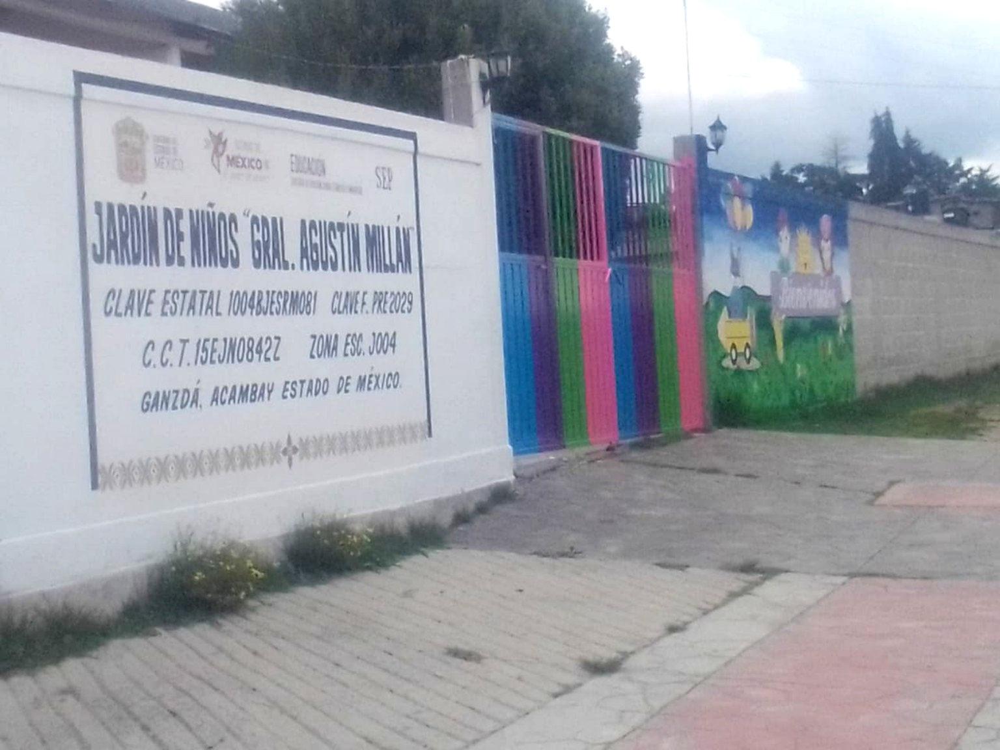
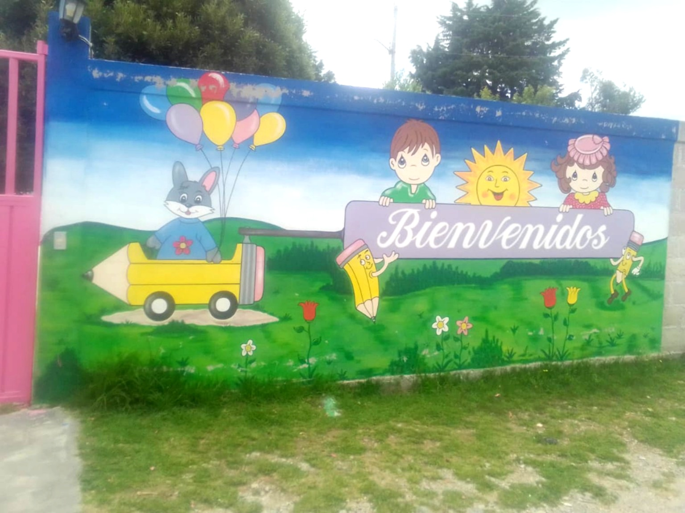
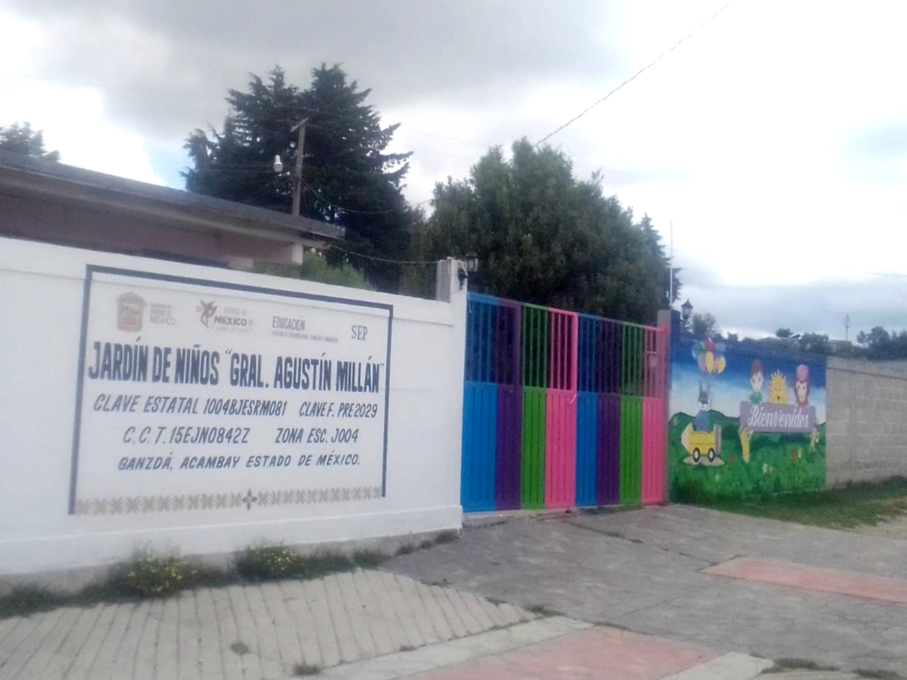

Ganzdá, Acambay, Estado de México
El kínder utiliza un modelo educativo basado en proyectos y aprendizajes esperados, adaptando la enseñanza a las necesidades de cada niño para que se sientan cómodos y seguros. Realizan actividades dinámicas como juegos y ejercicios con música para facilitar el aprendizaje, y evalúan el progreso observando cómo los alumnos se expresan e interactúan con sus compañeros. Los valores son fundamentales en la formación de los niños, ya que les ayudan a distinguir entre lo bueno y lo malo. Este kínder destaca por su forma de trabajar, el trato hacia los niños y la comunicación con los padres, quienes son escuchados al igual que los maestros para manejar opiniones tanto positivas como negativas. Cuenta con aproximadamente 40 alumnos, quienes permanecen alrededor de 5 horas y media en la institución. Entre los beneficios que ofrece se encuentran clases de inglés, arte, educación física y apoyo en salud, lo que contribuye al desarrollo integral de los niños. Además, fomenta la socialización, el desarrollo emocional y la seguridad, ayudando a que los alumnos interactúen con otros. La creatividad e imaginación se desarrollan mediante actividades como la lectura de libros, permitiendo que los niños participen activamente en su aprendizaje. Antes de pasar a la primaria, adquieren habilidades básicas principalmente socioemocionales y creativas, y el desarrollo del lenguaje y la comunicación se fortalece a través de cuentos con imágenes y narraciones cortas.


